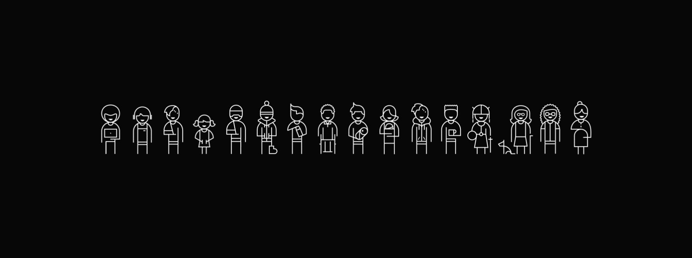
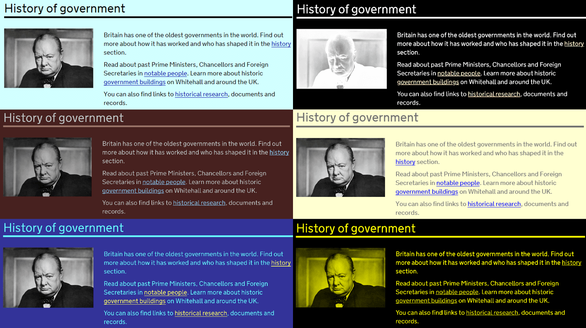

Accessibility
Designing for inclusivity

Allowing for Customization

Other resources
- Google's Web Accessibility course on Udacity
- Alexa / Snips on Sara Hendren's blog
My stuff
- Pode is an experimental code editor for newcomers to programming who are visually impaired.
- Accessible color palette builder
- Animated focus ring